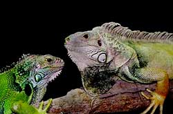

Tijdens het voortplantingsseizoen komt het in de natuur regelmatig tot strijd tussen mannelijke exemplaren. Deze vormen namelijk territoria en verdragen dan geen andere mannetjes in hun nabijheid. Voordat het eventueel tot een echt gevecht komt proberen ze elkaar te verjagen door imponeergedrag. Dit bestaat voornamelijk uit het knikken met de kop terwijl hun keelflap uitgeklapt is. Ook gaan ze hoog op de poten staan en platten ze hun lichaam zijdelings af om groter te lijken. Wanneer dit niet helpt, komt het tot serieuze gevechten, waarbij flink gebeten kan worden en er striemende klappen met de staart worden uitgedeeld. De overwinnaar is gewoonlijk het dier dat zich mag verheugen in een paring met een passerend vrouwtje.
In de Reptielenzoo Iguana leeft er in elke kweekgroep in principe slechts een volwassen mannetje. Meerdere mannetjes bevechten elkaar voortdurend, omdat er geen echte ontsnappingsmogelijkheden in een terrarium aanwezig zijn. Hoe groot het terrarium ook is! Groene Leguanen zijn van nature geen agressieve dieren. Wanneer ze zich bedreigd voelen zullen ze in de eerste plaats proberen te vluchten. Zijn er geen vluchtmogelijkheden, dan zijn het geduchte tegenstanders. Alle "wapens" worden ingezet, de vlijmscherpe nagels, de evenzo scherpe tanden en niet te vergeten, de lange staart. Met laatstgenoemde delen ze harde klappen uit die zeer pijnlijk zijn.
Tegenover hun verzorgers zijn Groene Leguanen zeer vreedzaam. Ze herkennen deze zeer goed en luisteren zelfs naar hun roepnaam. Bij een goede, respectvolle verzorging worden Groene Leguanen net zo aanhankelijk als een huiskat. Na de paring duurt het ongeveer 3 maanden totdat de eieren gelegd worden. Het aantal eieren varieert tussen 20 en 78 stuks per legsel. De eieren die we willen uitbroeden worden in een couveuse gelegd op een vochtig substraat bij een temperatuur tussen de 28 en 32 º Celsius. Het duurt dan gemiddeld zo'n 100 dagen tot de jongen uit het ei kruipen.
In Reptielenzoo Iguana zijn er tot nu toe ruim 150 leguanen geboren. De laatste jaren wordt slechts een klein deel van de eieren bebroed om overbevolking te voorkomen.
In 2000 zijn in Reptielenzoo Iguana de eerste 25 jongen van de vijfde generatie, in gevangenschap gekweekte Groene Leguanen, geboren.

